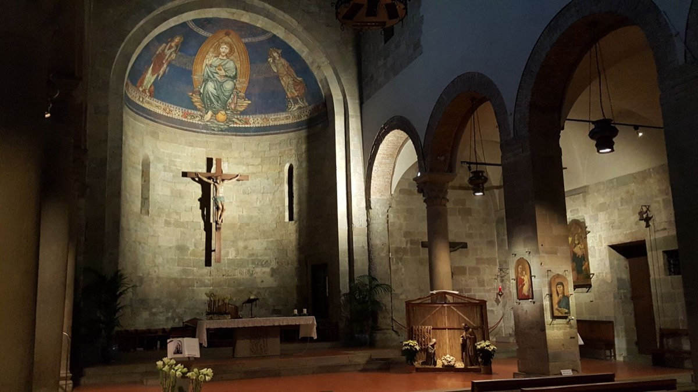

Percorso 5 · Religioso
Mugello Cristiano
Dall’arrivo del cristianesimo in Mugello ai tanti eremi, chiesette e abbazie contenenti grandi tesori e che hanno segnato la fede dei Mugellani e non solo
A PiediIn BiciCon il Tuo Cane
A Piedi
- Durata
- 8/10 giorni
- Lunghezza
- 211,4 Km
- Difficoltà
- Difficile
- Dislivello
- 10823 Mt
Traccia (211,2 km)Partenza e arrivo
Porta il percorso con te
Scarica la traccia per il navigatore o per un'app come Komoot, OsmAnd o Wikiloc.
Sentieri e cammini attraversati
- Sentieri CAI
- nr. 14 - nr. 2 - nr. 14 B - nr. 6 B - nr. 6 - nr 10 - nr. 419 - nr. 429 - nr. 555 - nr. 521 - nr. 519 - nr. 6 - nr. 20 - nr. 7 - nr. 619 - nr. 20 - nr. 505 - nr. 00 - nr. 743 - nr. 730 - nr. 46 - nr. 19 - nr. 17 - nr. 60 - nr. 65 - nr. 1 - nr. 8 - nr. 5 - nr. 9
- Cammini
- Cammino di Dante - Grande Escursione Appenninica - SOFT 22 - SOFT 16 - Sentiero Italia - SOFT 15 - Via degli Dei - SOFT 7 - SOFT 8 - SOFT 6
Descrizione del percorso
Leggi il racconto di Orme del Mugello
Il cammino parte dal Monastero di Santa Caterina nel comune di Borgo San Lorenzo (188 m), che sorge el centro storico del paese. Custode di un prezioso patrimonio artistico e documentario, sopravvissuto alle soppressioni napoleoniche e postunitarie, il monastero fu fondato nel 1516 su autorizzazione di Leone X, nacque per iniziativa del pievano Damiano Manti, che lo legò alla pieve per garantirne il sostentamento. Le prime suore domenicane giunsero da Firenze per istruire le novizie, che nel 1518 pronunciarono i voti solenni. Il monastero si sviluppò ristrutturando edifici preesistenti, acquisendo terreni e arricchendosi grazie a lasciti e monacazioni. Nei secoli, subì trasformazioni architettoniche, ma conservò elementi originali, come il chiostro e le decorazioni rinascimentali. Ospita opere d’arte di Cesare Velli, Matteo Rosselli e Michele Tosini. Dopo alterne vicende, il monastero potrebbe tornare a essere un punto di riferimento culturale, se restaurato e reso accessibile, testimoniando il forte legame tra la tradizione domenicana e la storia del borgo. Poco distante dal monastero, si può visitare il Santuario del SS. Crocifisso, importante luogo di culto e testimonianza storica di tutto il Mugello. La sua origine risale al XVII secolo, quando la comunità decise di edificare una chiesa per custodire un Crocifisso miracoloso, al centro di una profonda devozione popolare. La costruzione avvenne tra il 1641 e il 1673, ma il culto del Crocifisso affonda le radici nel 1400. Il Crocifisso, venerato per i suoi presunti prodigi, fu inizialmente custodito dalla Confraternita del Corpus Domini, poi Compagnia de’ Neri, che aveva un oratorio sul sito dell’attuale Santuario. La crescente importanza del culto portò alla costruzione di una nuova chiesa nel 1714, completata nel 1743, caratterizzata da una pianta a croce greca con una cupola centrale. Il terremoto del 1919 causò gravi danni, ma i restauri del 1927 ripristinarono l’edificio, mantenendo la sua struttura settecentesca. Oggi il Santuario conserva il monumentale altare maggiore e gli arredi barocchi, rappresentando un simbolo di fede e tradizione per la comunità.
Usciamo da Borgo San Lorenzo, in direzione Vicchio. Immersa tra antichi sentieri percorsi da viandanti, troviamo la Cappella di Rabatta, un piccolo gioiello di spiritualità e storia. Edificata tra il XIII e il XIV secolo, rappresenta un esempio di architettura religiosa rurale e mantiene un legame con Pietro Nelli, pittore trecentesco di scuola giottesca nato nella zona. Funzionava come luogo di culto per pellegrini e comunità locali, ospitando affreschi e opere d’arte sacra. Sebbene molte siano andate perdute, la cappella resta un simbolo di fede e cultura, testimoniando l’intreccio tra arte e spiritualità che caratterizzava il Mugello medievale.
Proseguendo lungo il sentiero, si attraverso l’iconico ponte di Cimabue e percorrendo parte del percorso tematico dedicato ai pittori che hanno reso celebre questi luoghi, si arriva alla Chiesa di San Martino a Vespignano. Situata sulla sommità dell'omonimo colle, ha origini medievali ed è dedicata a San Martino di Tours. Un tempo suffraganea della pieve di Borgo San Lorenzo, è documentata dal XIII secolo, sebbene possa essere più antica. La tradizione la collega a Giotto, che sarebbe nato nelle vicinanze, mentre suo figlio Francesco ne fu priore nel 1329. La chiesa ha una facciata semplice a capanna, con un robusto campanile ricostruito dopo il sisma del 1919. L'interno, a navata unica, ospita un coro voltato a crociera, affreschi antichi, l’altare di Dino Chini e opere come la Madonna del Latte di Paolo Schiavo. Tra gli elementi artistici spiccano una statua bronzea di San Giovanni Battista di Antonio Berti, un tabernacolo del XV secolo e un pulpito ligneo. La chiesa conserva anche un organo settecentesco restaurato e un fonte battesimale in granito, legato a un’antica pietra sacrificale. Pochi metri separano la Chiesa di San Martino a Vespignano da un altro punto significativo, la Cappella della Bruna, un luogo di culto mariano e un simbolo della devozione mugellana al Beato Giovanni Bruni, nato a Vespignano nel 1234. Secondo la tradizione, egli si raccoglieva in preghiera in questa cappella, restaurata nel XIX secolo. Le sue spoglie furono traslate a San Giovanni Maggiore nel 1801, mentre una sua reliquia era già venerata a Borgo San Lorenzo dal 1723. L’edificio conserva un affresco quattrocentesco della Madonna del Latte, attribuito alla bottega di Paolo Schiavo. Ancora oggi, la cappella rappresenta un punto di riferimento spirituale e storico per la comunità locale.
Si prosegue lungo strade di campagna. Dai punti più aperti è possibile vedere in lontananza le vette che circondano l’intera valle del Mugello. Entriamo dunque a Vicchio, terra natale del Beato Angelico. Nel centro del paese, affacciata sulla vivace piazza Giotto, la Chiesa di San Giovanni Battista rappresenta un luogo di culto di notevole importanza storica e artistica, strettamente connesso alla vita della comunità e alla figura del santo omonimo. Risalente al periodo medievale, l’edificio ha attraversato numerosi restauri e modifiche nel corso dei secoli. La chiesa, dedicata al patrono di Firenze, riflette la profonda devozione a San Giovanni Battista, diffusa in Mugello fin dall’epoca longobarda. Custodisce opere d’arte e manufatti liturgici che testimoniano l’influenza della tradizione artistica fiorentina nel territorio. Attraversiamo il ponte sul fiume Sieve all’altezza di Ponte a Vicchio e rimanendo sul versante destro del corso d’acqua, dopo pochi chilometri si raggiunge Badia a Bovino (180 m), dove è presente un luogo di culto oggigiorno abbandonato, la chiesa dell’omonimo borgo. Il nome “Bovino” potrebbe derivare dalle attività agricole o da Alboino, legato all’epoca longobarda. Fondata intorno al 1050, venne concessa ai monaci di San Miniato al Monte, passando poi alla diocesi di Firenze nel 1374. L’edificio romanico, oggi in deterioramento, conserva affreschi settecenteschi e una cripta di origine incerta.
Si continua in prossimità del fiume Sieve. Dopo pochi chilometri si raggiunge Dicomano (170 m), importante centro per tutto il comprensorio. qui sorge la Pieve di Santa Maria. Le origini dell’edificio risalgono probabilmente all’epoca longobarda, anche se la prima menzione documentata è del X secolo. Il titolo mariano riflette la forte devozione popolare e il ruolo centrale della pieve nella vita religiosa e sociale della comunità. Situata lungo le antiche vie di comunicazione tra Firenze e la Romagna, fungeva da punto di riferimento per pellegrini e mercanti. Nei secoli ha subito vari restauri, conservando la struttura romanica originale. Durante il Rinascimento, grazie all’intervento delle famiglie fiorentine, venne arricchita con opere d’arte e decorazioni. Oltre alla funzione religiosa, la pieve era un centro di aggregazione per eventi civili e assemblee comunitarie. L’edificio, con la sua imponente facciata in pietra, presenta un interno a tre navate con colonne in arenaria. Tra le opere d’arte custodite spiccano un fonte battesimale medievale, un affresco quattrocentesco della Madonna col Bambino e un crocifisso ligneo di epoca medievale. Secondo una leggenda, un’antica reliquia mariana custodita nella chiesa veniva portata in processione per proteggere Dicomano dalle calamità naturali.
Uscendo dal paese, ci imbattiamo in un altro edificio di notevole importanza, l’Oratorio di Sant’Onofrio. L’ Oratorio è legato alla venerazione della Madonna dello Spedale, un affresco di grande valore spirituale e artistico. Le sue origini medievali sono intrecciate con leggende, tra cui quella dell’immagine sacra trasportata dalle acque del torrente. L’attuale edificio, progettato tra il 1792 e il 1795 dall’architetto Giuseppe del Rosso, è un elegante esempio di stile neoclassico, con una maestosa facciata a colonne ioniche e un campanile a ventola. L’interno, decorato con stucchi e marmi, ospita opere d’arte come l’Immacolata Concezione di Lorenzo Lippi e il Miracolo di San Francesco Saverio. L’affresco della Madonna, di autore ignoto, è considerato miracoloso e venerato per secoli, attirando devoti da tutto il Mugello, tra cui Bianca Cappello. Un tempo associato a un ospizio per pellegrini, l’oratorio ha mantenuto un ruolo centrale nella vita della comunità. Restaurato tra il 1989 e il 1995, oggi è un importante simbolo della devozione dicomanese e della ricca tradizione artistica del territorio. Poco distante dal tracciato è presente la Badia ad Agnano, fondata probabilmente nell'XI secolo. Caratterizzata da una struttura romanica con affreschi medievali e un crocifisso ligneo del XIV secolo, ha svolto un ruolo spirituale e culturale nel territorio.
La badia, che ospitava pellegrini e poveri, ha visto il declino dal XVI secolo, ma è stata restaurata nel XX secolo, diventando un simbolo della storia locale. Poco prima di Carbonile inizia il sentiero naturalistico che dopo un tratto di salita, ci porta direttamente all’Oratorio della Madonna della Neve, reso celebre dalla leggenda dell’immagine legata alla figura di Maria.
La leggenda della Madonna della Neve
Secondo la leggenda popolare locale, anticamente, proprio nel luogo dove ora sorge la cappella, fu ritrovata un’immagine della Madonna di straordinaria bellezza e valore artistico. Trasportata nella vicina Pieve di San Babila a San Bavello, accadde che, all’alba del giorno successivo, tutta la zona fu ricoperta da una miracolosa e inattesa nevicata, proprio il 5 agosto. Contemporaneamente, l’immagine della Madonna scomparve misteriosamente dalla pieve e fu ritrovata, dopo lunghe ricerche, nello stesso punto dove era stata scoperta in origine. Interpretando l’evento come un segno divino, gli abitanti decisero di costruire un oratorio per custodire e venerare l’immagine
Una piccola deviazione dal percorso originale porta all’antica Pieve di San Babila. Risalente al XII secolo, la Pieve è caratterizzata da una facciata austera in pietra arenaria e un interno sobrio con un battistero in marmo del XIII secolo. La chiesa, dedicata a San Babila, vescovo martire, ha svolto un ruolo centrale nella vita religiosa e sociale del borgo, con celebrazioni annuali che attirano la comunità. Restaurata nel XX secolo, la pieve conserva il suo valore storico e spirituale, testimoniando la tradizione del Mugello.
Continuando invece per il sentiero, si attraversa piccoli agglomerati di case fino ad arrivare a Castagno d’Andrea (720 m), piccolo e affascinante borgo noto non solo per avere dato i natali ad Andrea del Castagno, pittore rinascimentale tra i più importanti del Quattrocento, ma anche per essere stato fonte d’ispirazione per un altro artista, Pietro Annigoni.
Dopo pochi chilometri si giunge in altro centro nevralgico, porta d’ingresso del Parco Nazionale delle Foreste Casentinesi, San Godenzo. anche San Godenzo può annoverare edifici legati al mondo cristiano. L’ Abbazia di San Godenzo infatti, è un capolavoro dell’architettura romanica con un forte legame con Dante Alighieri. Fondata nell’XI secolo dai monaci benedettini, divenne un centro spirituale e culturale grazie al sostegno dei Conti Guidi. L’edificio conserva una facciata austera, colonne scolpite e una suggestiva cripta. Nel 1302 ospitò un incontro tra i guelfi bianchi esiliati, tra cui Dante. La sua posizione strategica lungo antiche vie di collegamento la rese rifugio per pellegrini. Siamo nel mezzo del Cammino di Dante, percorso tematico che ripercorre la vita del Sommo Poeta. Passiamo per la famosa Cascata dell’Acquacheta, un salto d'acqua di circa 90 metri, e entriamo in un angolo di territorio caratterizzato dalla presenza di eremi e di boschi.
La prima struttura incontrata è l’Eremo dei Toschi, conosciuto anche come Eremo di Santa Maria. Situato a un'altitudine di 904 metri, l'eremo ha origini che risalgono all'XI secolo ed è stato riedificato tra gli anni Venti e Trenta del Novecento. Attualmente accoglie un'azienda agricola e mette a disposizione alloggi per escursionisti, mantenendo intatta la chiesa, che è ancora presente e arredata. Ancora qualche chilometro su sentiero in discesa e si raggiunge il secondo eremo, l’Eremo di Gamogna (790 m). Questo edificio è un luogo ricco di fascino e spiritualità. Situato nel comune di Marradi, rappresenta una delle più antiche testimonianze della vita monastica nella regione. Fondato nel 1053 da San Pier Damiani come monastero benedettino femminile, divenne presto un centro spirituale rilevante, ma fu progressivamente abbandonato. Dopo secoli di degrado, è stato restaurato negli anni ’90 da Don Giuseppe Samorì, recuperando la sua funzione di luogo di preghiera. Oggi accoglie pellegrini e visitatori in cerca di silenzio e meditazione.
Continuiamo seguendo il sentiero in discesa fino ad arrivare a Marradi (350 m), il paese di Dino Campana. Qui è possibile visitare la Chiesa di San Lorenzo. Nel cuore di Marradi, affacciata su Piazzale Celestino Bianchi, la chiesa rappresenta un’importante testimonianza storica e spirituale. Dedicata al martire cristiano, il suo legame con il territorio risale all’epoca romana, grazie alla vicinanza con la Via Faentina. Probabilmente fondata prima dell’anno Mille, la chiesa subì gravi danni nel terremoto del 1661 e fu ricostruita nel XVIII secolo con il sostegno del Granduca Pietro Leopoldo. L’edificio attuale, in stile neoclassico, conserva un’imponente navata unica con colonne ioniche e un prezioso trittico del XV-XVI secolo raffigurante la Vergine col Bambino tra San Lorenzo e San Giovanni Evangelista. Tra le opere custodite spiccano dipinti del Maestro di Marradi, provenienti dall’Abbazia di Santa Reparata. La chiesa è anche simbolo identitario del borgo: qui furono battezzati personaggi illustri come Dino Campana. Una lapide ricorda la visita del Granduca nel 1777, evento chiave nella storia locale.
Si prosegue lungo il sentiero condiviso con il Cammino di Dante e dopo circa 10 km arriviamo alle porte di Palazzuolo sul Senio (425 m). Tra le strutture legate al mondo cristiano, ritroviamo l’Oratorio dei Santi Carlo e Antonio (che oggi ha perso la sua funzione di luogo di culto ed è destinato ad attività culturali, mostre ed eventi), e la Pieve di Santo Stefano.
L’Oratorio con le panche incise
L’Oratorio dei Santi Carlo e Antonio è un elegante edificio di origine seicentesca. L’edificio ha mantenuto la sua struttura originaria e conserva al suo interno elementi decorativi di pregio. Gli altari sono impreziositi da eleganti stucchi, mentre le tele del XVII secolo testimoniano l’influenza della scuola pittorica fiorentina del tempo. Un particolare interessante è rappresentato dalle panche in legno del XVIII secolo, che riportano incisi i nomi dei donatori, a memoria del forte legame tra la comunità locale e l’oratorio. Non più adibito a luogo di culto, l’oratorio è oggi uno spazio dedicato alla cultura, ospitando periodicamente mostre, esposizioni ed eventi artistici.
Nel cuore di Palazzuolo sul Senio, la Chiesa di Santo Stefano rappresenta il principale luogo di culto del borgo. La sua struttura ha subito numerose modifiche nel corso dei secoli, in particolare nel XVIII secolo, nei primi del Novecento e dopo la Seconda Guerra Mondiale, assumendo un’architettura eclettica che fonde stili diversi. Un contributo artistico significativo si deve a Tito Chini, che nel 1936 curò alcune decorazioni interne, arricchendo il catino absidale e i sott’archi della navata con opere delle Fornaci San Lorenzo. Tra gli elementi di pregio spicca la vetrata policroma dedicata a Santo Stefano, raffigurato con le pietre sulla testa, simbolo del martirio. La chiesa conserva inoltre dipinti di epoca compresa tra il XVI e il XIX secolo, tra cui “Lo Sposalizio di Santa Caterina” e “La Visitazione”. Nonostante le trasformazioni, Santo Stefano resta un punto di riferimento spirituale e culturale per la comunità locale.
Lasciamo Palazzuolo sul Senio alle spalle, e ci dirigiamo verso sud. Si oltrepassa il fiume Senio all’altezza del Santuario della Madonna della Neve.
Le prime tracce documentate della chiesa risalgono al XVII secolo, ma la sua fondazione è legata a un episodio miracoloso che la tradizione popolare tramanda di generazione in generazione. Nel corso dei secoli, il santuario subì ampliamenti e restauri, assumendo l’attuale aspetto semplice ma suggestivo, con una facciata in pietra e un interno raccolto, dove regna un’atmosfera di pace e spiritualità. Ancora oggi, lungo i sentieri che conducono al santuario si possono trovare tracce di vecchie mulattiere utilizzate nei secoli passati. Secondo un’antica credenza, le campane del santuario suonavano spontaneamente in caso di imminenti disastri naturali o guerre, come un segnale divino per avvertire la popolazione. Alcuni anziani del paese raccontano di averle udite suonare senza alcuna spiegazione in momenti cruciali della storia locale.
La lunga salita che porterà al punto più alto di tutto il cammino, il Monte Carzolano, con i suoi 1184 m, ci riserva ancora sorprese come l’Eremo di Santa Maria a Lozzole, una delle pievi più isolate della zona. Fondato nel XV secolo come rifugio per eremiti e viandanti, divenne un importante centro religioso. Durante la Seconda Guerra Mondiale fu coinvolto in eventi bellici e in seguito abbandonato. Grazie all’opera di Don Giuseppe Samorì, è stato restaurato e oggi accoglie pellegrini ed escursionisti. Situato a oltre 1.100 metri di altitudine, conserva la semplicità delle chiese montane, con una facciata in pietra, un campanile a vela e antichi edifici monastici. La fatica della strada è in parte mitigata dalla presenza di piccoli bivacchi sempre aperti e usufruibili per il ristoro durante una pausa o per il pernotto. Nello spazio di pochi chilometri si raggiungono rifugi, non gestiti, come il Castè, il bivacco i Piani, Capanna di Marcone e il rifugio la Serra.
Si continua a scendere di altitudine. Il sentiero è ben tracciato e ricco di spunti naturalistici. Lungo il percorso si incontrano abitazioni in pietra oramai abbandonate e in parte dirute. Il bosco di latifoglie lascia spazio ad una più organizzata abetaia. Siamo prossimi alla Badia di Moscheta. Fondata nel 1034 da San Giovanni Gualberto, divenne un centro religioso e gestionale strategico, accogliendo pellegrini e commercianti lungo le vie tra Toscana ed Emilia-Romagna. Il suo nome potrebbe derivare dal latino “muschetum”, ossia luogo boscoso. Nei secoli, la badia fu guidata da abati illustri e amministrò vasti territori, ma perse importanza con le soppressioni ecclesiastiche del XVIII secolo. Oggi ospita il Museo del Paesaggio Storico dell’Appennino, che racconta la vita monastica e rurale.
Riprendiamo seguendo una strada forestale. il percorso è piacevole benché in salita. raggungiamo punti dove lo sguardo può spaziare su tutta la valle del Mugello. Tra questi, uno dei più suggestivi è Monte Pratone, con i suoi 965 metri. Situato tra il Passo della Colla e il Passo del Giogo, offre una vista che spazia dalle colline mugellane fino all’Appennino Tosco-Romagnolo. A sud si ammirano borghi, chiese e il lago di Bilancino, mentre a nord emergono le maestose vette appenniniche. Il monte è ricoperto da boschi di faggi e querce, mentre la cima si apre in ampi prati ideali per una sosta. Ricco di storia e natura, Monte Pratone regala scenari indimenticabili, soprattutto al tramonto o durante la fioritura primaverile.
La Leggenda del monaco
Una leggenda racconta di un monaco esperto in erboristeria e medicina, che sarebbe stato misteriosamente avvelenato per aver scoperto segreti scomodi. Si dice che il suo spirito ancora oggi vaghi tra le rovine della badia, lasciando nell’aria un lieve profumo di erbe aromatiche. Altre storie raccontano che, in tempi antichi, i monaci spesso dovevano affrontare lupi e banditi. Secondo un racconto popolare, un gruppo di pellegrini fu salvato da un assalto grazie all’apparizione della Madonna, che fece fuggire i predoni con un bagliore di luce improvviso.
Dopo tanta salita, inizia una ripida discesa verso Grezzano. Nel piccolo borgo è degna di una visita la chiesa intitolata a Santo Stefano.
La Chiesa di Santo Stefano a Grezzano è un piccolo gioiello di architettura medievale. Risalente al XIII secolo, si distingue per la sua struttura semplice e armoniosa, che riflette la devozione della comunità locale. La facciata essenziale e l’interno raccolto creano un’atmosfera di pace e contemplazione. Al suo interno si trovano preziosi affreschi dal XIV al XVIII secolo, raffiguranti scene bibliche e la vita di Santo Stefano. Da secoli, è un punto di riferimento per gli abitanti, mantenendo viva la tradizione e offrendo un angolo di spiritualità immerso nella natura toscana.
Da Grezzano si raggiunge in breve tempo un altro piccolo borgo, Luco di Mugello. La Chiesa di San Pietro è un importante edificio storico e artistico, legato all'antico monastero camaldolese femminile. Fondata nel 1086 e consacrata nel 1220, subì trasformazioni tra il XV e XVII secolo, arricchendosi di elementi rinascimentali. Tra il 1473 e il 1476, un allievo di Giuliano da Sangallo ampliò la struttura, mentre nel 1523 ospitò il pittore Andrea del Sarto. Dopo la soppressione del monastero nel 1808, divenne ospedale fino al 1989. La facciata conserva una lunetta in maiolica donata nel 1930, ispirata alla Madonna Pazzi di Donatello. Restaurata negli anni ’30, la chiesa rimane un punto di riferimento per la comunità locale.
Poco distante da Luco, al di fuori del tracciato del cammino, merita una menzione la Chiesa di Santa Maria a Pulicciano, la quale fu parte di una rocca medievale strategica, citata da Federico II nel 1220. Legata ai conflitti tra guelfi e ghibellini, potrebbe aver ospitato Dante Alighieri nel 1303. La facciata, restaurata nell’Ottocento, presenta un raffinato portale in pietra serena e una lunetta in maiolica di Galileo Chini (1927). L’interno, con navata unica e capriate lignee, conserva opere di Balducci, Fidani e un Compianto su Cristo morto attribuito a Benedetto Buglioni.
Ultimo edificio ecclesiastico prima di giungere nel capoluogo del Mugello è la Chiesa di San Giovanni Maggiore, con il suo caratteristico campanile longobardo, rappresenta un importante patrimonio storico e artistico. Citata già nel XII secolo, è dedicata a San Giovanni Battista, figura molto venerata in Toscana. L’interno conserva dipinti e affreschi che raccontano la vita del santo, mentre l’altare maggiore e le cappelle laterali sono arricchiti da pregevoli decorazioni. Il campanile, con base quadrata e struttura ottagonale, suggerisce una funzione difensiva, grazie alle mura spesse e alle aperture strategicamente disposte, testimoniando il passato medievale della pieve come luogo di culto e rifugio fortificato.
Siamo di ritorno a Borgo San Lorenzo, dove ha inizio la seconda parte del cammino, un percorso ad anello che coinvolge l’area occidentale della valle del Mugello. Appena fuori dal paese di Borgo San Lorenzo, in direzione di Scarperia, posto su un’altura che mostra l’intero skyline del centro più grande del Mugello, il Convento dei Cappuccini è un luogo di grande interesse storico e spirituale. Costruito intorno al 1578, nacque per volontà dei borghigiani, desiderosi di un luogo di preghiera gestito dai Frati Minori Cappuccini, noti per la loro vita semplice e l’impegno nell’aiuto ai bisognosi. La chiesa annessa conserva un altare ligneo barocco e dipinti della scuola fiorentina. Tra le curiosità, si narra che un frate ottenne con la preghiera la nascita di una sorgente, la “Fonte del Frate”, e che San Leonardo da Porto Maurizio vi abbia soggiornato.
Nei pressi di Scarperia è presente la Pieve di Santa Maria a Fagna. Come molte pievi del Mugello, la Pieve di Santa Maria a Fagna ha ricoperto un ruolo fondamentale nella vita religiosa e amministrativa della zona. Durante il Medioevo, fu un importante centro di evangelizzazione, con giurisdizione su diverse chiese minori. Nel XIII secolo, fu coinvolta nei conflitti tra Firenze e i signori feudali locali, ma con l’ascesa dei Medici nel XV secolo, visse un periodo di rinascita grazie a restauri e arricchimenti artistici. L’edificio, in stile romanico, si distingue per la sua pianta a tre navate e un’abside semicircolare.
All’interno si trovano opere d'arte notevoli, come un affresco quattrocentesco della Madonna con il Bambino e un crocifisso ligneo del XVI secolo. La pieve, posta lungo importanti vie di comunicazione, è stata anche un luogo di accoglienza per i pellegrini e, secondo la tradizione, per i frati francescani durante i loro viaggi di predicazione.
Il monaco che leggeva il futuro
Una delle storie più affascinanti legate alla pieve narra di un monaco che, nel Medioevo, viveva nei pressi della chiesa e che, secondo la tradizione popolare, aveva il dono di predire il futuro. Molti abitanti del Mugello si recavano da lui per chiedere consiglio, ma un giorno scomparve improvvisamente senza lasciare traccia, alimentando il mistero sulla sua figura. Secondo un’antica credenza locale, l’acqua di una fonte vicina alla chiesa sarebbe stata benedetta e dotata di proprietà curative, soprattutto per le malattie della pelle. Ancora oggi, alcuni abitanti della zona ricordano le storie tramandate dai loro nonni su questa misteriosa sorgente
Non distante dalla vicina Pieve di Santa Maria a Fagna, ben visibile da tutta la zona del Mugello centrale è possibile ammirare la Croce di Fagna, imponente croce lignea che domina sulla zona dei “Crocioni”. Offre una bellissima vista ed è luogo di devozione e eventi religiosi in particolari date, nonché simbolo di devozione della comunità di Fagna e Scarperia.
Si fa ingresso a Scarperia, famosa per l'arte e la tradizione artigianale. In particolare, è nota per la produzione di coltelli artigianali di alta qualità, un mestiere che affonda le radici nel Medioevo. Merita una visita la Propositura dei Santi Jacopo e Filippo, situata nella storica Piazza dei Vicari. Fondata nel XIV secolo, divenne il centro spirituale della comunità, affacciandosi di fronte a Palazzo dei Vicari, simbolo del potere civile. L’edificio, ristrutturato nel corso dei secoli, è noto per il campanile gotico e per opere d’arte di grande valore, come la tavola di Matteo Rosselli. La chiesa è arricchita da un pregiato coro ligneo e un’imponente navata. Accanto si trova l’Oratorio della Madonna dei Terremoti, legato alla protezione contro le calamità naturali.
Altro edificio di indubbio interesse è l’Oratorio della Madonna del Vivaio; costruito tra il 1724 e il 1741 su progetto dell'architetto Alessandro Galilei, è un'importante testimonianza storica e religiosa. Eretto su un terreno che ospitava un vivaio e sorgenti, il luogo era noto per un tabernacolo miracoloso della Madonna col Bambino. La costruzione iniziò grazie alla raccolta fondi promossa dal parroco Domenico Romagnoli, dopo un miracolo del 1723. L'oratorio, con una pianta circolare e una cupola che diffonde luce naturale, conserva l'immagine miracolosa della Madonna. Il sito, simbolo di devozione popolare, ospita anche lapidi commemorative dei caduti della Prima Guerra Mondiale.
Appena fuori il paese di Scarperia, si incontra nel cammino la Chiesa di San Gavino al Cornocchio. Fondata dalla nobile famiglia Ubaldini, è dedicata al martire cristiano San Gavino. L'edificio ha subito modifiche nel XVII secolo, ma conserva ancora la sua imponente facciata con porticato a spiovente e colonne corinzie. Tra i suoi tesori, spicca una pala d'altare del 1345, attribuita a Nicholaus, raffigurante la Madonna con due santi. Nonostante il degrado attuale, la chiesa rappresenta un importante simbolo storico e religioso, testimone delle vicende locali.
Si raggiunge la Pieve di Sant’Agata, nel piccolo borgo omonimo, tappa importante lungo la Via degli Dei. La chiesa è una delle più antiche chiese romaniche della Toscana, con origini che risalgono al X secolo. Dedicata a Sant'Agata, martire siciliana, la chiesa ha avuto un ruolo centrale nel Mugello durante il Medioevo. La sua facciata imponente, con arcate cieche e un portale scolpito, riflette l'arte medievale toscana. All'interno, custodisce un fonte battesimale romanico, dipinti rinascimentali e barocchi, e un crocifisso medievale. Accanto alla chiesa si trova un chiostro e un Museo di Arte Sacra, con opere che raccontano la storia religiosa della zona.
Dopo aver percorso i vicoli di Sant’Agata, si punta verso un altro borgo storico, Galliano e la sua Pieve dedicata a San Bartolomeo. Le origini e la storia di Galliano è strettamente connessa alla presenza e alle attività feudali degli Ubaldini nella parte più occidentale del Mugello. La nobile famiglia fondò il borgo nel XI secolo come punto di controllo strategico. Il sito, inizialmente monastero femminile e poi basiliano, si ampliò nel XII secolo con la chiesa, consacrata nel 1163 da San Tommaso di Canterbury. Il complesso subì diverse trasformazioni, inclusi restauri nel XVIII e XIX secolo. La chiesa fu ricostruita tra il 1845 e il 1847 con un’architettura sobria. Tra le opere d'arte si trovano il Fonte Battesimale del 1314, affreschi ottocenteschi e una tavola del 1257 di Margaritone d’Arezzo. La Pieve ha subito danni nel 1963 con il crollo del soffitto, distruggendo gli affreschi di Tito Chini.
Ci lasciamo Galliano alle spalle e attraversando il tipico paesaggio mugellano con i suoi campi coltivati, giungiamo alla Chiesa di Santa Maria a Soli. Documentata dal 1258, fu probabilmente legata alla famiglia Ubaldini. La chiesa, semplice e rustica, ha una pianta ad aula unica con una facciata a capanna in pietra arenaria. Nel tempo, ha subito trasformazioni, tra cui il rifacimento del campanile e del presbiterio. L'interno è caratterizzato da un altare in muratura, una tela della Madonna, e altri dettagli settecenteschi. La chiesa, oggi sussidiaria della parrocchia di San Bartolomeo, conserva un'atmosfera suggestiva e tranquilla.
Poco distante troviamo una delle strutture più iconiche di tutto il Mugello, il Convento di Bosco ai Frati. L’edificio ha radici longobarde, ma la sua storia è fortemente legata alla famiglia Medici che ne favorì il restauro e l'arricchimento artistico. Fondato come eremo nel VII-VIII secolo, nel XIII secolo divenne un centro francescano. Nel XV secolo, Cosimo de' Medici finanziò la ristrutturazione affidata all'architetto Michelozzo. Bosco ai Frati divenne un importante centro religioso e culturale. Il convento ospita opere significative come il Crocifisso di Donatello, dipinti rinascimentali e una biblioteca con manoscritti storici. Oggi conserva un prezioso patrimonio artistico e religioso.
Arriviamo a San Piero a Sieve, importante tappa della Via degli Dei. Degna di nota la Pieve di San Pietro, con i suoi oltre mille anni di storia; è uno dei luoghi di culto più significativi del Mugello. Fondata nell'XI secolo vicino a un crocevia medievale, divenne il centro religioso del borgo, che si sviluppò attorno ad essa. La pieve ebbe un'importante funzione battesimale e, nel tempo, fu arricchita di opere d'arte, mantenendo la sua rilevanza durante il dominio dei Medici. La struttura romanica, con facciata sobria, colonne in pietra serena e ampie navate, conserva affreschi, dipinti rinascimentali, un fonte battesimale in pietra e un crocifisso ligneo medievale. La pieve fu anche testimone di eventi storici, frequentata da figure illustri come i Medici e, forse, San Giovanni Gualberto. La leggenda narra che durante le guerre, documenti e oggetti preziosi furono nascosti nei sotterranei per proteggerli da razzie. Immersa tra le dolci colline, la Chiesa di San Niccolò a Spugnole rappresenta una gemma nascosta. Il nome "Spugnole" deriva dalla particolare conformazione del terreno ricco di sorgenti d'acqua. La chiesa, in stile romanico, conserva una facciata semplice, un'abside semicircolare e un campanile a torre. L'interno, a navata unica, presenta capitelli scolpiti, affreschi fiorentini del XIV-XV secolo, e un crocifisso ligneo medievale. La chiesa fu frequentata anche dai Medici, aumentando il suo valore storico.
La famiglia dei Medici
Uno degli aspetti più affascinanti della Pieve di San Niccolò a Spugnole è il suo legame con il Castello del Trebbio e con i Medici. Si narra che Lorenzo il Magnifico e altri membri della famiglia fiorentina si recassero in questa chiesa per assistere alle funzioni religiose durante le loro permanenze nel Mugello. Inoltre, alcune leggende popolari raccontano di passaggi segreti che collegavano la pieve al vicino castello, utilizzati dai Medici per spostarsi in sicurezza tra i loro possedimenti. Sebbene non vi siano prove archeologiche certe, queste storie alimentano il fascino misterioso del luogo.
Si continua percorrendo un comodo sentiero che coincide con il tracciato della Via degli Dei. In posizione panoramica troviamo la Badia del Buonsollazzo, fondata nel XI secolo da monaci benedettini. Il nome "Buonsollazzo" potrebbe derivare dal latino "bonus solacium", che significa "buon conforto", un riferimento alla serenità del luogo. Nel corso dei secoli, la badia divenne un centro di grande importanza religiosa e culturale, ospitando figure come San Giovanni Gualberto e l’Abate Lorenzo Corsini. La sua biblioteca conteneva preziosi manoscritti miniati e il monastero attirava artisti e letterati. Dopo un periodo di splendore, nel XIX secolo subì il declino e fu soppressa. Oggi, purtroppo in rovina, conserva un'aura di mistero e rimane un simbolo di spiritualità e arte. Tra le opere che ospitò, vi erano affreschi quattrocenteschi, un crocifisso ligneo e tarsie di scuola fiorentina.
Non lontano dalla Badia di Buonsollazzo, arroccato sulla sommità di uno dei rilievi più suggestivi del Mugello si erge il Santuario di Montesenario. Il nome "Montesenario" deriva dai sei monti che circondano il santuario, ma è anche legato ai fondatori, che qui si ritirarono per una vita di preghiera. Fondata nel XIII secolo dai Sette Santi Fondatori dell'Ordine dei Servi di Maria, la chiesa originaria fu costruita nel 1250, seguita da ampliamenti che ne aumentarono il valore. Oggi, il santuario ospita opere d'arte come il Crocifisso ligneo del XIV secolo e la statua della Madonna Addolorata. Inoltre, i frati serviti sono noti per la tradizione erboristica, che include rimedi naturali e liquori come la Gemma di Abete. Montesenario resta un luogo di preghiera, bellezza e storia, attirando ancora oggi pellegrini e visitatori alla ricerca di pace e spiritualità.
Gode di un’ottima vista anche un altro edificio, il Santuario della Madonna del Sasso. Situato su uno sperone roccioso sopra Santa Brigida, è un luogo di culto di grande bellezza e spiritualità, meta di pellegrini e turisti. Il nome deriva dalla roccia su cui sorge, simbolo di protezione. La sua storia inizia nel XIII secolo, anche se il sito potrebbe essere stato un luogo di devozione già in epoche precedenti. La tradizione racconta che la costruzione del santuario fu ispirata da un'apparizione della Madonna. Nel corso dei secoli, il complesso è stato ampliato e arricchito con opere d'arte, tra cui affreschi del XV secolo e decorazioni barocche. Importanti figure religiose, come Padre Giovanni da Fiesole, contribuirono alla fama del santuario. Ancora oggi, il Santuario della Madonna del Sasso è un attivo centro di culto e un'attrazione culturale, noto per la sua posizione panoramica e il suo fascino storico, simbolo di fede e tradizione.
Ci avviciniamo sempre più alla meta del cammino. A pochi chilometri dall’arrivo, ci troviamo di fronte alla Pieve di San Cresci in Valcava. La chiesa è uno dei luoghi di culto più antichi e significativi del Mugello, legato alla memoria del martire San Cresci, che nel III secolo d.C. diffuse il Cristianesimo nella regione. La pieve segna l'inizio della conversione al Cristianesimo nel Mugello, sostituendo i culti pagani. La sua posizione strategica nel punto di passaggio tra le vallate mugellane la rese un importante centro religioso. Nel corso dei secoli, l’edificio fu ampliato e restaurato, arricchendosi di opere artistiche di epoche diverse, tra cui affreschi medievali e dipinti rinascimentali. La chiesa divenne un punto di riferimento spirituale e culturale, frequentato da pellegrini e devoti. Oggi, conserva un fascino antico e una bellezza unica, con il suo fonte battesimale e le opere d’arte sacra. La visita alla Chiesa di San Cresci in Valcava offre un'opportunità di riflessione sulla storia cristiana della zona, immersi in un paesaggio naturale suggestivo.
Degna di menzione sebbene non sia più accessibile per via del rischio di crolli, la Cappella di San Cerbone, situata vicino alla pieve di San Cresci in Valcava, è un piccolo ma importante luogo di culto, dedicato a San Cerbone, vescovo di Populonia e patrono di Massa Marittima. Costruita in epoca antica, la cappella offriva rifugio e preghiera ai pellegrini lungo i sentieri del Mugello. La sua storia e il suo legame con la tradizione religiosa locale continuano a viverne nel cuore dei visitatori. Realizzata in pietra con una struttura semplice, la cappella rappresenta un esempio di spiritualità rurale. Ultima struttura prima di fare ingresso a Borgo San Lorenzo, è la Chiesa di Santa Maria a Olmi. Le sue origini risalgono al Medioevo, quando divenne un centro di culto per la comunità locale. Il nome "a Olmi" deriva dalla presenza di olmi secolari nella zona. Nel corso dei secoli, l'edificio ha subito modifiche architettoniche pur mantenendo la sua struttura originaria, rimanendo un punto di riferimento spirituale e culturale. La chiesa ospita opere d'arte di scuola fiorentina, come una pala d'altare raffigurante la Madonna con il Bambino, affreschi e decorazioni sacre, nonché arredi liturgici in legno intagliato. La sua importanza va oltre la spiritualità, essendo stata anche un luogo di aggregazione sociale. Nel tempo, nobili e mecenati hanno contribuito al suo mantenimento, arricchendola artisticamente.
Una volta riattraversato il ponte sul Fiume Sieve chiudiamo il secondo anello di questo lungo, ma allo stesso contempo affascinante e ricco di storia, cammino.
Dormire, mangiare e prodotti lungo il percorso
Strutture ricettive (147)
- Affittacamere Al Mulino contatti
- Affittacamere Via Degli Dei contatti
- Agriturismo Borgo Macereto contatti
- Agriturismo Borgo Scaffaia contatti
- Agriturismo Gamberaldi contatti
- Agriturismo Il Belvedere contatti
- Agriturismo La Matteraia contatti
- Agriturismo La Vanella contatti
- Agriturismo Lazzari - Agricampeggio contatti
- Agriturismo Le Pozze contatti
- Agriturismo Pian Barucci contatti
- Agriturismo Poggio Bartoli contatti
- Agriturismo Universal Harmony contatti
- Agriturismo Vaiursole contatti
- Al Volo Del Nibbio contatti
- Albergo Ristorante Iolanda contatti
- Alla Corte Di Carla contatti
- Area Di Sosta Vecchio Ponte contatti
- Badia Di Moscheta contatti
- BeB ASTIETO contatti
- BeB AURA contatti
- BeB CA'MINO contatti
- BeB CIRCUIT contatti
- BeB ELISIR DI TAGLIAFERRO contatti
- BeB IL BAGARELLO contatti
- BeB IL PITTORE contatti
- BeB IL PODERE DELLA PIAZZA contatti
- BeB IL PODERINO contatti
- BeB KINGA contatti
- BeB LA CASA DI COSIMO contatti
- BeB LA CASA FUORI PORTA contatti
- BeB LA PIEVE contatti
- BeB LE DUE VOLPI contatti
- BeB MARETTI contatti
- BeB TAGLIAFERRO contatti
- BeB VACANZE IN MUGELLO contatti
- Borgo Di Serignana contatti
- Borgo! Hospitality contatti
- Ca'Mino Di Farneti Mirco contatti
- Camping Village Mugello Verde contatti
- Casa Amerigo contatti
- Casa Torta contatti
- Casale San Giorgio contatti
- Castello Del Monsignore contatti
- Catelaccio contatti
- Ca’ Nova contatti
- Chalet La Greta contatti
- Collecchio contatti
- Donnini contatti
- Fantino contatti
- Fattoria I Ricci contatti
- Fattoria La Topaia contatti
- Fattoria Le Case contatti
- Francini contatti
- Frascole contatti
- Gli Orzali contatti
- Hotel Ebe contatti
- Hotel Europa contatti
- Hotel La Rosa contatti
- Hotel Marrani contatti
- I Castagni Dei Medici contatti
- I Giardini Di Marcello contatti
- I Monti contatti
- I Suoni Del Bosco contatti
- Il Borghetto contatti
- Il Borgo Di Elisa contatti
- IL BORGO DI VILLA CELLAIA - widespread hotel contatti
- IL COLLE BeB contatti
- Il Fangaccio contatti
- Il Gallo Birichino contatti
- IL MUGELLO BeB contatti
- Il Muretto contatti
- Il Nido di Gabbiano BeB contatti
- Il Pino Del Capitano contatti
- Il Podere Di Tullio contatti
- Il Poggio Alle Ville contatti
- Il Villino contatti
- La Casa Di Colle contatti
- La Casetta Di Ginevra contatti
- La Casina Delle Fate Nel Castellaccio contatti
- La Colombaia contatti
- La Corte Di Ronzano contatti
- La Fattoria Del Farneto contatti
- La Felicina contatti
- La Germana contatti
- La Serra contatti
- La Spiga contatti
- La Stazione Di Monta contatti
- La Terrazza contatti
- La Vacchieta contatti
- Le Scalelle contatti
- Le Spiagge contatti
- Lo Sghimbescio contatti
- Locanda Degli Artisti contatti
- Locanda Di Alberi contatti
- Locanda Senio contatti
- L’Olmo contatti
- MONSIGNOR DELLA CASA COUNTRY RESORT eSPA contatti
- Mugello Hostel contatti
- Mugello Vacanze contatti
- My Home contatti
- Orticaia Chiesa contatti
- PALAZZO TORRIANI Residenza d'Epoca contatti
- Piano Rosso contatti
- Podere Capitignano contatti
- Podere I Lastri contatti
- Podere La Carbonaia contatti
- Podere La Casella contatti
- Podere Moiata-Fattoria Di Campestri contatti
- Podere Ugolini contatti
- Poderuzzo contatti
- Poggio A Sieve contatti
- Poggio Di Sotto contatti
- Poggio Savelli contatti
- Popolano Di Sotto contatti
- Residence Le Isole contatti
- Residences E Appartamenti- Villa Torricelli Il Giardinetto contatti
- Residenza Di Campagna Montelleri contatti
- Rifugio Alpino Casa Al Giogo contatti
- Rifugio Alpino Castellonchio contatti
- Rifugio Escursionistico Badia Moscheta contatti
- RIFUGIO Punto G.E.A. contatti
- Rupecanina contatti
- Santalvico contatti
- Short Term Rental In Borgo San Lorenzo contatti
- Short Term Rental In Dicomano contatti
- Short Term Rental In Marradi contatti
- Short Term Rental In Palazzuolo Sul Senio contatti
- Short Term Rental In San Godenzo contatti
- Short Term Rental In Scarperia E San Piero contatti
- Short Term Rental In Vicchio contatti
- Sommavilla contatti
- Tenuta Le Tre Virtu' contatti
- Tenuta Mazzini contatti
- Tertulia coliving contatti
- Tre Fiumi contatti
- Valnera contatti
- Villa Campestri contatti
- Villa Cerreto contatti
- Villa Dalia contatti
- Villa Di Pilarciano contatti
- Villa I Ciliegi contatti
- Villa La Commenda Concordia contatti
- Villa Le Case contatti
- Villa Maltempo contatti
- Villa Medicea Lo Sprocco contatti
- Villino Le Vigne contatti
Aziende (25)
- Agriturismo Lazzari
- Az. Agr. La BeeO Baita contatti
- Azienda Agricola Palazzo Vecchio contatti
- Azienda Agricola Poggio dei Roti contatti
- B.beb La Casa di Cosimo
- Bacco del Monte di Elena Bartalucci contatti
- Banco Fiorentino - Filiale di Borgo San Lorenzo
- Banco Fiorentino - Filiale di Luco di Mugello
- Banco Fiorentino - Filiale di Scarperia
- Banco Fiorentino - Filiale di Vicchio
- Borgo Macereto contatti
- Camping Village Mugello Verde contatti
- Farming
- Frascole soc.agr. di Lippi E. Santoni C. e E. s.s. contatti
- Il Poggio alle ville di Raffaele Edlmann contatti
- IncorniciArti
- La Felce e il Mirtillo contatti
- Marchisoro Farm
- Monsignor della Casa Country Resort e Spa
- Poggio a Sieve - Casa Vacanze
- Rifondazione agricola di Sandra Nerbosi contatti
- Società agricola Bacciotti s.s. di Sandra e Roberto Mongili contatti
- Società agricola Il Ponte di Trotta Rocco e Lompi Stefania s.s. contatti
- Tenuta Cafaggiolo contatti
- Tenuta Matteraia contatti
Il nome della struttura porta al suo sito web; "contatti" apre la scheda con telefono e mail sul portale turistico Mugello Toscana (per chi non ha un sito c'è solo quella). Le aziende portano ai loro siti. Sono tutte segnate anche sulla mappa.
Percorso, traccia e testi di Orme del Mugello, pubblicati con il loro permesso.